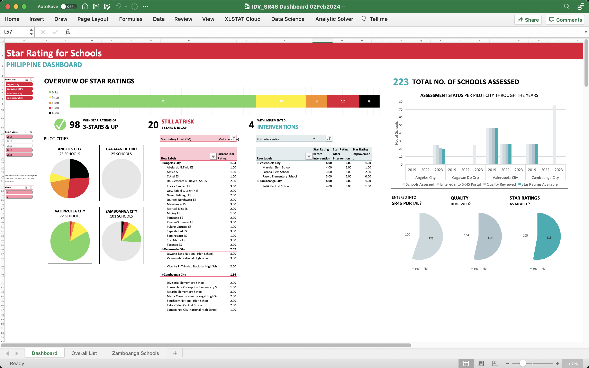

Making roads safer for children in the Philippines:
A project dashboard proposal
WHY
This is to propose a project dashboard for the Child Road Traffic Injury Prevention program, a road safety improvement program in the Philippines which targets high-risk schools in the country. Its main purposes are:
- to track project progress, results, and priorities, and
- to facilitate communication within the team and stakeholders.
WHAT
The dashboard needs to show the number of school zones assessed per pilot city over the years, the resulting road safety ratings, and the schools at risk that need to be prioritized. A map of the schools was also requested.
HOW
The initial dashboard plan is as follows:

Created Feb 2024
Proposed dashboard
The school zones are assessed using Star Rating for Schools (starratingforschools.org/) and follows the star ratings of the International Road Assessment Programme (iRAP) (irap.org/). One of the UN Sustainable Development Goals is for roads to be built to a 3-star or better standard for all road users.
Note: Data used in this visualization is manipulated.
Schools with high road safety risk
| City | School Name | Star Rating | Contact |
|---|